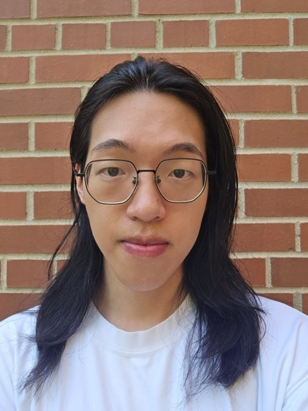

Towards Unveiling Vulnerabilities of Large Reasoning Models in Machine Unlearning
Aobo Chen*, Chenxu Zhao*, Chenglin Miao, Mengdi Huai.
PAKDD 2026. *Equal contribution.

Ph.D. Student in Computer Science, Iowa State University
I am a Ph.D. student in the Department of Computer Science at Iowa State University, advised by Dr. Mengdi Huai. My research focuses on data mining and machine learning, especially security and privacy vulnerabilities of machine learning algorithms.
I am particularly interested in machine unlearning, uncertainty quantification, interpretability, and medical imaging applications.
Aobo Chen*, Chenxu Zhao*, Chenglin Miao, Mengdi Huai.
PAKDD 2026. *Equal contribution.
Chenxu Zhao, Wei Qian, Aobo Chen, Mengdi Huai.
ICCV 2025.
Aobo Chen*, Yangyi Li*, Chenxu Zhao, Mengdi Huai.
AI Magazine, 2025. *Equal contribution.
Aobo Chen, Yangyi Li, Wei Qian, Kathryn Morse, Chenglin Miao, Mengdi Huai.
MICCAI 2024.
Yangyi Li*, Aobo Chen*, Wei Qian, Chenxu Zhao, Divya Lidder, Mengdi Huai.
ICML 2024. *Equal contribution.
Chenxu Zhao, Wei Qian, Yangyi Li, Aobo Chen, Mengdi Huai.
ICML 2024.
Wei Qian*, Aobo Chen*, Chenxu Zhao, Yangyi Li, Mengdi Huai.
arXiv, 2024. *Equal contribution.